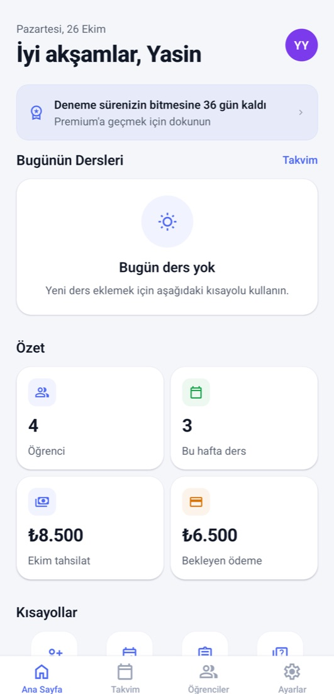
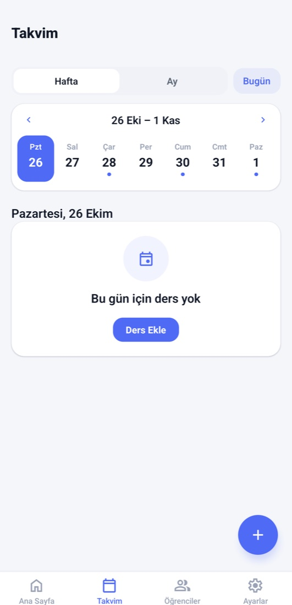

App Store'da yayında · Android yakında
Özel derslerin tamamı tek uygulamada.
Öğrenci Takip Sistemi; özel ders veren öğretmenlerin ders programını, ödemelerini, ödevleri ve deneme sonuçlarını tek yerden yönetmesini sağlar. Veliler de kendi hesaplarıyla çocuklarının gelişimini takip eder.
Öğretmenler için 7 gün ücretsiz deneme · Veliler için ücretsiz

- 7 gün
- Ücretsiz deneme, kart gerekmez
- 2
- Platform: iPhone ve Android
- ₺0
- Veliler için ücret yok
- Anlık
- Ders, ödev ve ödeme bildirimleri
01 — Özellikler
Defter, takvim ve ödeme listesi artık tek ekranda.
02 — Veliler için
Öğretmeninizden davet kodu mu aldınız?
Üç adımda çocuğunuzun derslerini, ödevlerini ve deneme sonuçlarını takip etmeye başlayın. Veliler için uygulama ücretsizdir.
iPhone'da App Store'dan, Android'de Google Play'den "Öğrenci Takip Sistemi"ni indirin.
Giriş ekranının altındaki "Veli misiniz?" bölümünde.
Öğretmeninizin gönderdiği kodu yazın; adınızı, e-postanızı ve şifrenizi belirleyin.

Hemen başlayın
Öğretmenler 7 gün boyunca tüm özellikleri ücretsiz dener; sonrasında aylık ya da yıllık abonelikle devam eder.